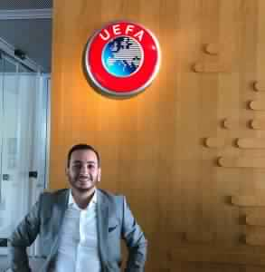

حوار خاص مع عمرو الراوى – مدير التسويق الرقمي لنادى توتنهام هوت سيبرز الإنجليزي
يصف البعض (التحوّل الرقمي) بأنه إستراتيجية استخدام التكنولوجيا الرقمية لتغيير طريقة عمل المؤسسات والهيئات وخدمة العملاء بشكل أفضل. ونستطيع أيضاً تعريف (التحوّل الرقمي) بأنه عملية لمساعدة المؤسسات على إيجاد طرق جديدة لتوليد القيمة.وقد أصبحت هذه العبارة في كل مكان في عصر (بالرقمنه-Digitization).
ولكننا نجد في مبادرات (التحوّل الرقمي -Digital transformation) لتحسين الكفاءة وزيادة قيمة العلامات التجارية تستثمر المؤسسات والهيئات والحكومات مليارات الدولارات كل عام من أجل خلق فرص تسييل جديدة للأعمال فى مجتمع عالمى أتسم (بالرقمنه-Digitization) ومقابل هذه المليارات هناك مئات المليارات الأخرى تصرف هباء ودون جدوى وتفشل خطط التحول الرقمى بشكل مأساوي ،. ويرجع السبب لهذا هو سوء الإدارة على نطاق واسع بمعنى أدق ترجع المسؤولية فى كلتا الحالات على قائد الفريق.
ولكن ايضاً توجد العديد من العوائق التي تعرقل عملية التحول الرقمي داخل المؤسسات والشركات أهما هو نقص الكفاءات والقدرات المتمكنة داخل المؤسسة والقادرة على قيادة برامج التحوّل الرقمي
ويقود القادة الأقوياء الذين وضعوا التجربة الرقمية والعملاء في لب نموذج العمل جهود التحول الناجحة و هؤلاء القادة يعملون بأستمرار من التأكد من أن استراتيجيات التحول الرقمي الخاصة بهم تتعامل مع الفجوات والأزمات – وأن يفهم الجميع إلى أين تذهب المنظمة ولماذا.
أحد قادة التحوّل الرقمى هو قائد فريق التسويق الرياضي لفريق توتنهام ونحن فخورين بكونه شاب مصري هو القائد المبدع (عمرو الراوي) مدير التسويق الرقمي لتوتنهام هوت سيبرز.
-تشرفت بمقابلتك ويسعدنى أجراء هذه المقابلة معك ..وقبل أن نبدأ حديثنا ، ما هو فيلمك المفضل ؟
ده شرف لي و حاجه تسعدني يا حميدة – ان بحب السنيما جداً .ومن الأفلام العالمية فيلم إيطالي
اسمه
‘Life is Beautiful ‘ و من الأفلام العربي فيلم ‘الكيف’
– .ما هو تخصصك فى نادى توتنهام هوت سيبرز ومنذ متى تعمل مع أبرز الفرق الأوروبية ؟
لقد كنت اعمل مدير التسويق الرقمي لتوتنهام هوت سيبرز. وتخصصي هو قيادة فريق التسويق في برنامج التحوّل الرقمي في التسويق الرياضي. لفريق توتنهام في الخمس سنوات السابقة من الفرق الاربعة الاوئل في جدول الدوري الإنجليزي الممتاز ، لكن من ناحية الأرباح و اعداد الجمهور هما في المرتبة السادسة.وقد كنت مكلف من مجلس الإدارة بقيادة فريق التسويق من خلال برنامج تحول رقمي من أجل نقلل الفارق و نجحنا بشكل كبير في وضع خطة طويلة المدي ستساعد توتنهام على التنافس ماليا مع الأندية الأخرى في مجموعة “الستة الكبار” “سيتي، يونايتد، ليفربول، أرسنال وتشيلسي”.
وبعد هذه التجربة المتميزة فى حياتى العملية انتقلت لشركة اوركال للتركيز علي مساعدة الأندية و الاتحادات الرياضة في التسويق الرياضي.
– أذكر لنا اهم المحطات فى حياتك حتى الوصول للأنضمام الى قيادة فريق التسويق فى نادى توتنهام هوت سبيرز الإنجليزي ؟
سؤال جميل المحطات العملية كالاتي:
١ – الانتقال من مصر بإنجلترا : ده كام من خلال شركة
فودافون. بدأت السلم من الأول، ابتدأت كموظف خدمة عملاء. بعد خمس سنين في العمل في الشركة
بمصر و الانتقال للديجيتال، جتلي فرصة للانتقال لانجلترا. ده كانت نقطة تحول.
٢- الانتقال لشركة سيسكو بإنجلترا و قيادة فريق التسويق الرقمي الراعي لأولمبياد لندن ٢٠١٢، و كان لي الحظ اني اخد كثير من الجوائز لعملي في التسويق الرياضي و الرعاية.
٣- و المحطة التالته الانتقال لقيادة فريق التسويق الرياضي لفريق توتنهام في اهم فتره في تاريخ النادي و هي الانتقال من الاستاد القديم الاستاد الجديد.
– هل صنعت الفرصة لك يوماً طريقاً للعالمية ام هناك عوامل أخرى ؟
الفرصة صنعت لي بفضل الله أولاً و جزء من الحظ و كثير من العمل الشاق و الدراسة.
-بعد أكثر من 20 عاماً فى مجال التسويق لماذا التسويق الرياضي هو مجال تخصص (عمرو الراوي) ؟
انا من صغري و انا اعشق حاجتين الرياضة و الفن. انا ابتدأت حياتي العملية بعد التخرج من كلية الفنون الجميلة كمهندس ديكور و تطور الأمر لأكون مصمم جرافيكس ثم مصصم مواقع و منها للتسويق الرقمي. و مع حبي للرياضة كان المزج بين التسويق و الرياضة هو الهدف الأوحد.
-هل يمكنك وصف مفهوم التحوّل الرقمي كونه أكثر من مجرد تطوير وتحسين للعلامة التجارية ؟
طبعاً هو اكثر بكثير؛ التحوّل الرقمي بيكون برنامج لتحول و الانتقال بأي شركة أو منظومة عمل من التسويق التقليدي المبني علي الإعلانات و زيادة التوعية بالعلامة التجارية الي التسويق الرقمي المبني علي استخدام الداتا و المعلومات
للتسويق المستهدف(targeting) و المشخص(personalised). و ده بتطلب تغير في التكنولوجيا و الداتا و الأشخاص و منهج العمل (Technology, Data, People and Data)
-هل تتوقع فى المستقبل ان يكون للذكاء الاصطناعى دوراً مميزاً فى المؤسسات الرياضية العالمية؟
هو الان له دور كبير المؤسسات الرياضية، و ده جزء من الموضوعات اللي بساعد فيها كتير من الأندية و الاتحادات؛ علي سبيل المثال اتحاد الكره الأماني بيدرس أزاي ممكن المشجع يحلل فرصة التهديف و أللعب في أي هجمة علي المرمي. في مجال التسويق الوقت الأمثال لارسال عروض خاصة بالنادي عن طريق تحديد الوقت المثال لارسال العرض بناء علي استخدام كل شخص للإيميل و في امثله تاني كتير.
-هذا العام نشرت على حسابك الشخصى أنك كنت فخوراً باجتماعك بمسؤولي الUEFA في سويسرا لتطوير التسويق الرياضي و الترابط بالجمهور حول العالم . فهل تشرح لنا أكثر عن بعض من استراتيجيات تطوير التسويق الرياضى ؟
استراتجية تطوير التسويق الرياضة بتتمحور حول تحول الأندية و الاتحادات من مجرد فريق رياضي الي شركة ترفيه زي والت ديزني أو نت فليكس. فالاستراتيجية بتكون مبنية علي كيفة استخدام و استغلال الداتا لتفعيل التواصل مع الجمهور لزايدة العائد المادي و تطوير التواصل مع الجمهور.

وما هو مفهوم ( الترابط بالجمهور حول العالم ) ؟
التعامل مع الترابط بالجمهور ليس محصور علي من يحضر المباراة في الاستاد يجب استغلال القاعدة العريضة من المشجعين حول العالم اللتي تتابع الفريق عبر الشاشات و الإنترنت . لتوسيع القاعدة الجماهيرية و تحويل الانتماء لفريق لعائد مادي
ما هى أهم النقاط الرئيسية التى تم تناولها في لقائك هذا العام مع FIFA ؟
في لقاء كان محور الاجتماع كيفة استخدام الداتا و التكنولوجيا لتطوير الترابط بالجمهور في بطولات الفيفا بما يتضمن كاس العالم و الeSports
– كيف ترى التسويق الرياضى فى مصر ؟
التسويق الرياضي في مصر في البداية، و لكن النادي الاهلي من الأندية اللي ابتدأت في التركيز في المجال ده ، و تقديم كارت المشجع بتاع النادي الاهلي . كان في مثال جميل من فريق الجونة في تقديم الزي الجديد للفريق. لكن احنا لسه في البداية .
-من خلال خبراتك العالمية ما هو الملف الرياضى فى مصر الذى تتمنى ان تديره ولديك خطط طموحة له ؟
بكل صراحة لايوجد ملف معين لان جميع ملفات التسويق في مصر محدوده و مغلقه علي مجموعة معينه من زوي الثقة ليس الخبره، بالإضافة اني الملفات لا تدار باحترافية، علشان أي حد ينجح لازم يكون في احترافية. و لكن انا احب انا اساعد الاتحاد أو أي نادي لو محتاجين مساعده
-ما هي اللحظة الأكثر فخرًا منذ إنطلاقك فى هذا المجال ولماذا؟
الفوز بعددة جوائز لعملي في التسويق الرقمي لملف الرعاية لشركة سيسكو في أولمبياد لندن ٢٠١٢. و بناء خطة تطوير التسويق الرقمي لفريق توتنهام هوت سيبرز.
-كيف يمكن للعلامات التجارية الرياضية الاستفادة من تطور إستراتيجيات التسويق الرقمى بقنواته المختلفة ؟
يجب البدء باستخدام الداتا و تطوير البنية التحتية لتكنولوجيا المعلومات، و حساب العائد الاستثماري لأي استثمار في التسويق الرياضي.
-ما هى نصيحتك لمن يريد أحتراف مجال التسويق الرياضى ؟
ابداء بدراسة التسويق الرقمي مع الاطلاع علي كل ما هو جديد في العالم من خلال الإنترنت و القراءة.
-ما هو لونك المفضل ؟
اللون الأحمر
-كيف تستمتع بقهوتك في الصباح؟
استمتع بقهوتي فقط في الإجازة – احب القهوة التركي مع قطعة كيكة شوكولاتة
-ما هو أفضل كتاب قرأته في العام الماضي؟
‘ Start with Why’ by Simon Sinek
-اين هو مكانك المفضل لتفكر فى المستقبل ؟
في الطائرة و انا مسافر نظراً لسفري المتكرر
ما هى اول وظيفة لك وكم كان عمرك ؟
اول وظيفة لي كانت متطوع في دورة الاعاب الأفريقية بمصر – كان عمرى حوالى ١٦ سنه
من الذي يلهمك؟
ابي الله يرحمه. كان أستاذ بالجامعة الأمريكية
من تقول له ( شكراً لقد كان الطريق سهلاً بكم ) ؟
زوجتي فهي تتحمل الكثير و دأئماً تشجعني في عملي
وانا ايضا فى النهاية اقول لك شكراً على اتاحة الفرصة لهذا الحديث الشيق والمثمر للكثير
اترك تعليق